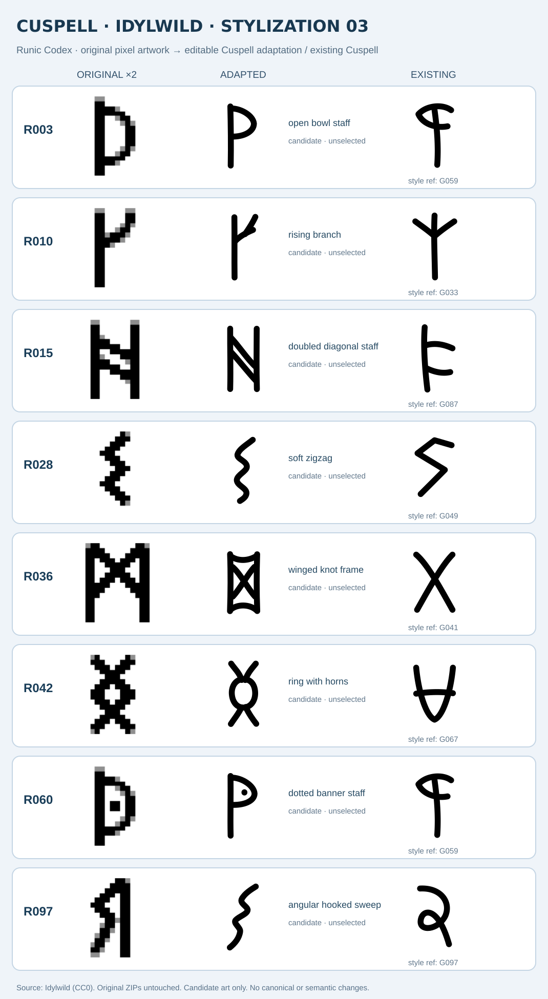
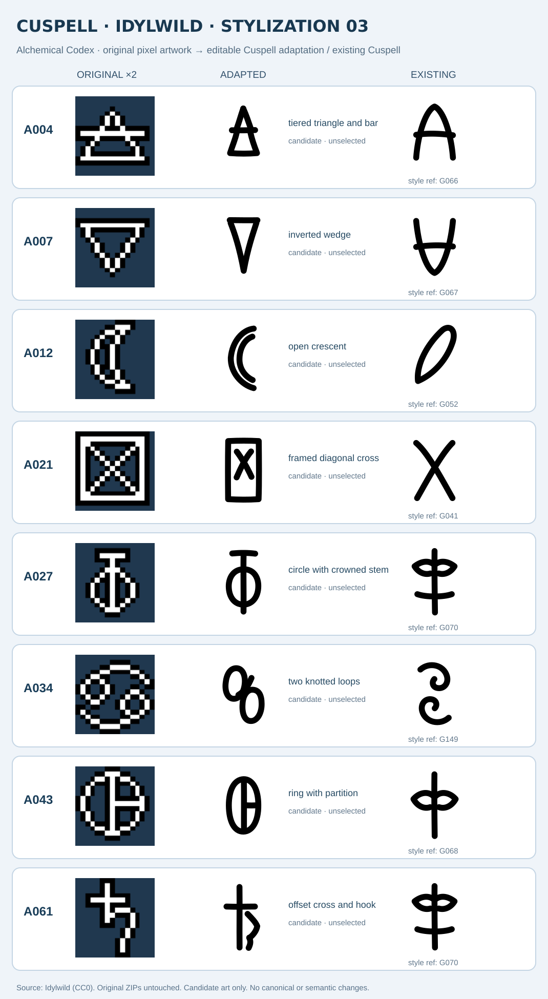

For each ID: original Idylwild 16px source bitmap, new editable centerline SVG in Cuspell's rounded 66-unit style, and an unchanged existing Cuspell reference. The reference is for visual consistency only, not a meaning assignment or proposed replacement.
Runic Codex

Alchemical Codex

Original Idylwild archives retained. Styling rounds open terminals and spaces separated details; no changes to the 150 canonical SVGs.